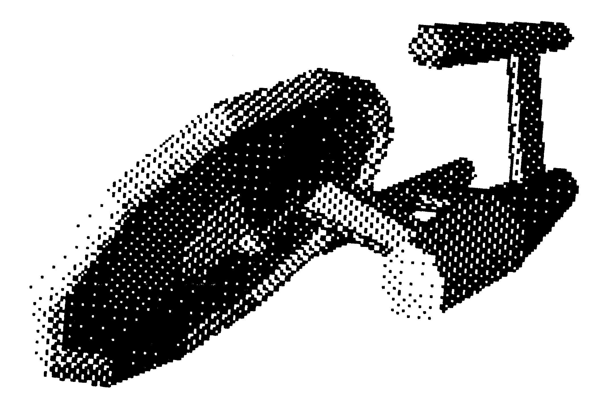
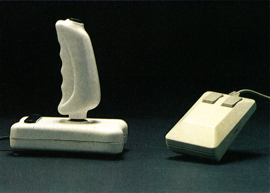

Vorschau
Software-Ereignis des Jahres
In London fand Anfang September die PCW-Messe statt. Auf dieser Messe warenalle englischen sowie die bekanntesten amerikanischen Software-Hersteller vertreten, um die neuen Produkte für das Weihnachtsgeschäft vorzustellen. Wir warennatürlich auch dabei und berichten von der Messe, die dieses Jahr die weltweit wichtigste für Heimcomputer-Software ist.
Schaltplan der 1541
Der vierte Teil des Reparaturkurses behandelt das Diskettenlaufwerk 1541 mit seinen Fehlerquellen. Außerdem decken wir die häufigsten Fehlerursachen auf und zeigen, woran man sie erkennt und natürlich auch wie man sie behebt. Dazu erhalten Sie einen kompletten Schaltplan der 1541, anhand dessen Sie mögliche Fehler herausfinden können.
Schnelle 3D-Grafik auf dem C 64
Das Listing des Monats im November erlaubt es, Körper zu konstruieren und diese fast in Echtzeit um die X-, Y- oder Z-Achse zu drehen. Nun können Sie selbst komplizierte Körper aus allen Blickwinkeln betrachten und damit Ihr Vorstellungsvermögen schulen. Ein Programm, unterhaltsam und lehrreich zugleich.
Einsteiger
Für alle Basic-Anfänger bieten wir in der nächsten Ausgabe einen ausführlichen Rundgang durch die Variablen-Welt. Natürlich kommen auch grafikbegeisterte Einsteiger nicht zu kurz. Es wird ausführlich erklärt, wie die ersten Schritte zur Grafikprogrammierung bewältigt werden können. Abgerundet wird der Einsteigerteil durch nützliche Tips & Tricks, Hilfen von Profis, sowie dem zweiten Teil des Fachbegriff-Lexikons.
Grafik
In einem Grundlagenartikel werden all denjenigen die Programmtechniken und erforderlichen PEEKs und POKEs beigebracht, die sich für Grafik interessieren. Nicht nur der Grafik-Einsteiger, auch der Maschinensprache-Profi erhält hier viele Informationen, die ihm als Nachschlagewerk hilfreiche Dienste leisten. Neben der Programmierung von LoRes- und HiRes-Bildern wird auch die Programmierung von Sprites erklärt.
Tips & Tricks zu Giga-CAD
Zum Spitzenprogramm Giga-CAD (erschienen in der Sonderheftreihe der 64'er im Juni 1986) erhalten Sie in der nächsten Ausgabe Druckparameter, um gängige und auch exotische Drucker anpassen zu können. Außerdem finden Sie noch Hardcopy-Routinen, die dem Okimate 20 und dem Commodore-Plotter VC 1520 das Arbeiten mit Giga-CAD ermöglichen.

Joystick kontra Maus
Das verbreitetste Eingabegerät für den Joystick-Port ist immer noch der Joystick selbst. Wir machen Sie mit dem Inneren dieser Geräte vertraut, denn Joystick ist nicht gleich Joystick.
Aber auch Mäuse und Trackballs kommen nicht zu kurz. Besonders die Mäuse werden immer beliebter. Gibt es grundlegende Unterschiede zwischen den Mäusen? Was ist beim Programmieren zu beachten?

Stereo, aber richtig!
Sie können zwar mit den drei Stimmen aus Ihrem C 64 schon äußerst interessante Musikstücke herauslocken, aber leider nur in Mono. Da gibt es Abhilfe. In der 64'er, Ausgabe 11/86, stellen wir Ihnen die Bauanleitung für den »Double-SID« vor. Das ist ein zweiter SID-Baustein, der sich fast wie der Original-Sound-Baustein programmieren läßt. In Verbindung mit Ihrer Stereoanlage ergeben sich völlig neue Klangdimensionen.